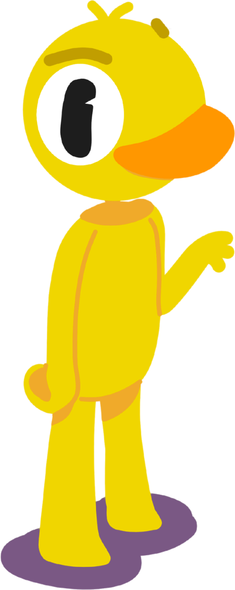
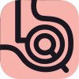

LQS es modular hasta en su propia identidad: un azulejo, una mascota y una marca distinta para cada área, que funcionan solas y encajan entre sí. Esto es lo que hacemos para otros, hecho primero con nosotros.
Un personaje propio que le pone cara a la marca: aparece en el sitio, en las piezas y en las esquinas donde una marca necesita calidez. De línea simple para que viaje en cualquier tamaño.

Siete áreas de trabajo y los encargos Express, cada una con su propio monograma sobre el azulejo. El mismo ADN, ocho señales distintas.

Digital